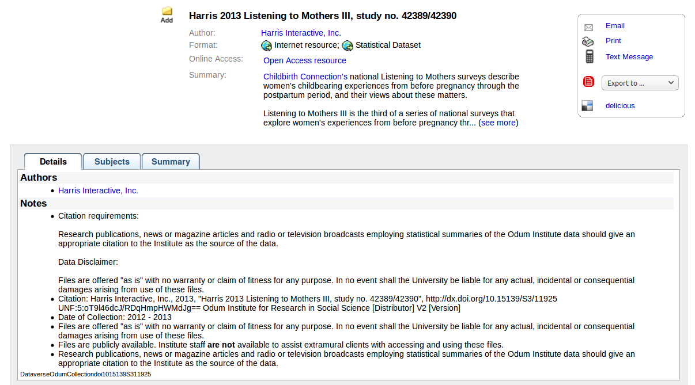
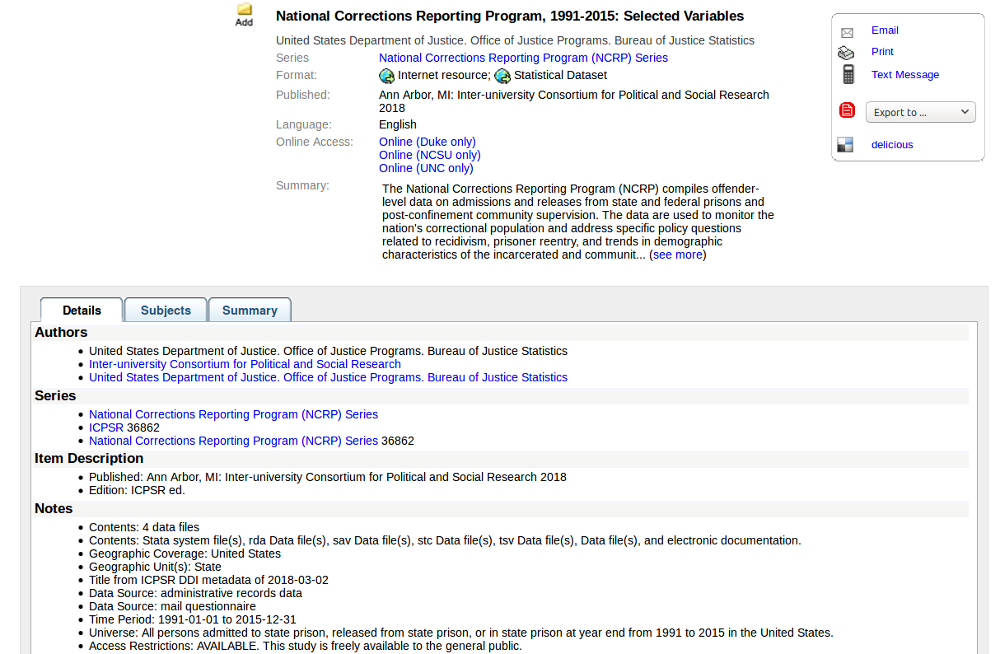

Data's Role in the Transformative Research Library
Kristina M. Spurgin
2018-10-16
Created: 2018-10-13 Sat 22:42
Introduction
- Who am I?
- Notes and disclaimers
Context: The transformative research library
- Libraries as organizations are transforming
- Working in a transformative library transforms you
- A transformative library transforms the world
Data
- Research data
- Patron/user data
- Collections as data
- Library data
Research Data

Figure 1: USGS Science Data Lifecycle Model. Boxes indicate the main Model elements, and the shaded arrows below represent cross-cutting elements.1
Data management plans (DMPs)
- Required by an increasing number of funders (src)
- Calls for decisions about:
- metadata
- organizing data
- selecting file formats
- supporting sharing and reuse of data
- data archiving and preservation
- rights, licensing, open access considerations
These are not new concepts or skills for libraries!
Library services and tools related to DMP
Data discovery
Our users need data to:
- conduct research
- complete coursework
- meet personal information needs
Libraries are exploring ways to help users to find the data they need
Aggregation of metadata from data repositories in discovery tools
- Triangle Research Libraries Network (TRLN) shared catalog
- One shared index and union catalog of Duke, NCCU, NCSU, and UNC holdings
- Individual institutional catalogs for Duke, UNC, and NCSU
- External feeds of metadata from two data repositories mapped into catalog
- UNC Odum Institute Archive Dataverse
- ~2895 dataset records
- unrestricted sets only
- appear for all institutions
- Inter-university Consortium for Political and Social Research (ICPSR)
- ~10,696 study records (some have multiple data files associated)
- appear for Duke, NCSU, and UNC only
- UNC Odum Institute Archive Dataverse
UNC Odum Institute Archive Dataverse record

Figure 2: UNC Odum Institute Archive Dataverse record appearing in the UNC instance of the TRLN shared catalog (link)
ICPSR record in TRLN Shared Catalog

Figure 3: ICPSR record appearing in the TRLN shared catalog (link)
Data catalogs
A data catalog is an aggregation of metadata and corresponding links to data. The catalogs are used to bring together related data that may be hosted in different repositories to make it easier for researchers to find data. Current catalogs range from aggregating research data from an institution to from an entire field.
Different from a data repository – data itself is not stored in the catalog
Responsibilities in larger data discovery ecosystem
If we are building institutional or consortial data repositories or catalogs:
- Support harvesting and aggregation of your metadata
- OAI-PMH, ResourceSync, or an API that supports metadata harvesting
- Ensure metadata is interoperable
- Register your collections with appropriate external resources
working with
providing expertise and education on using and creating data r gis etc
publishing and/or preserving
Handling data in IRs? Partnering with
A Comparative Review of Various Data Repositories created by Dataverse, and including: Analyze Boston (CKAN) data.world Dryad figshare Harvard Dataverse Mendeley Data Open ICPSR Zenodo Open Science Framework Kaggle.com
collections as data
patron data
library data
data warehousing - connecting silos - leveraging external data
user privacy!
- Becky Yoose
- ToS Ethics in Research Use of Library Patron Data.pdf - https://osf.io/bygj3/